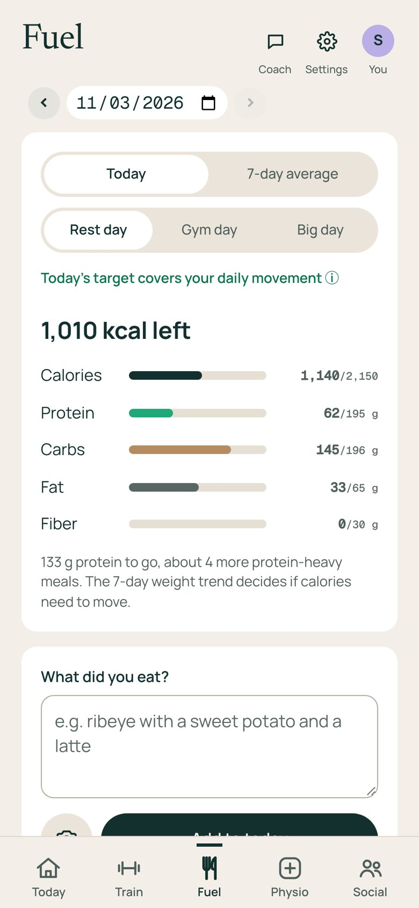
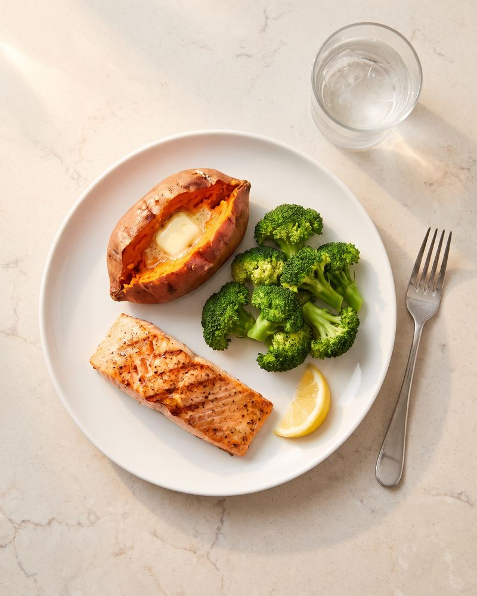
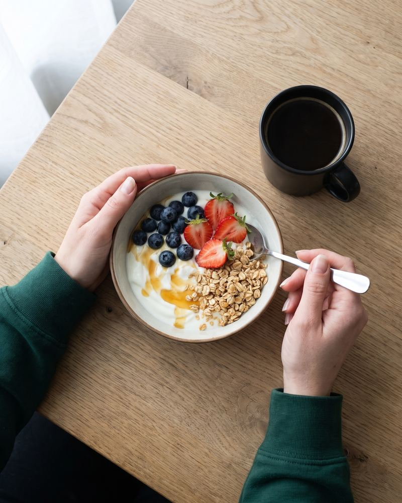
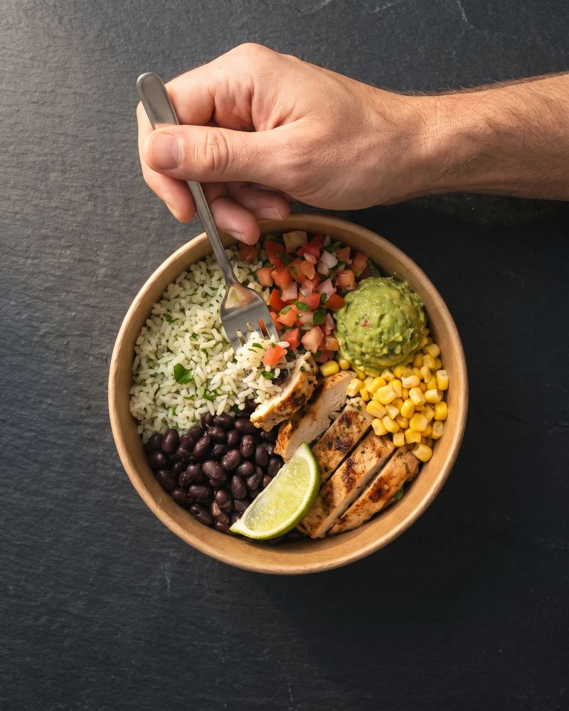
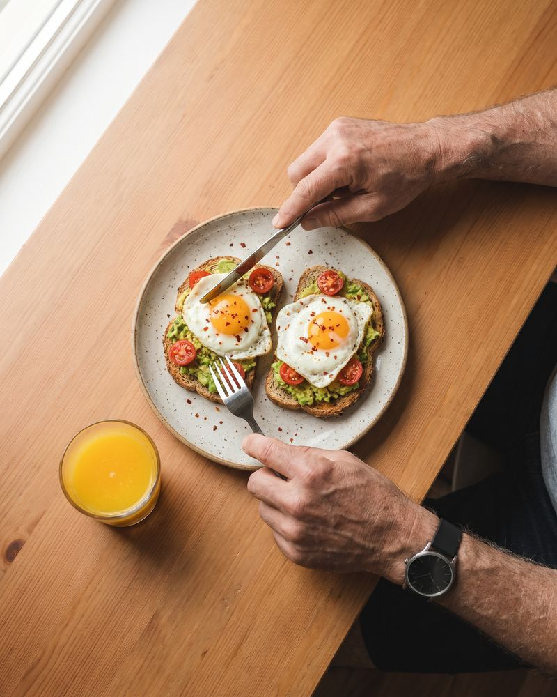
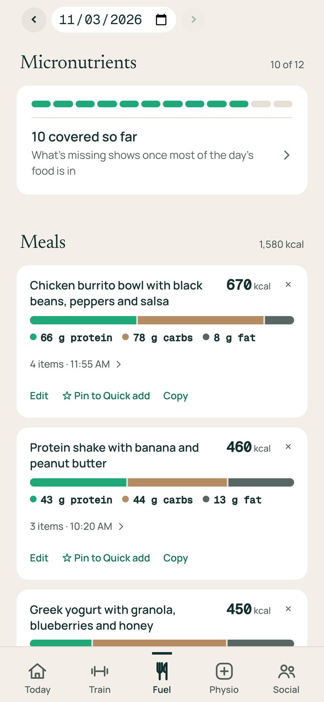
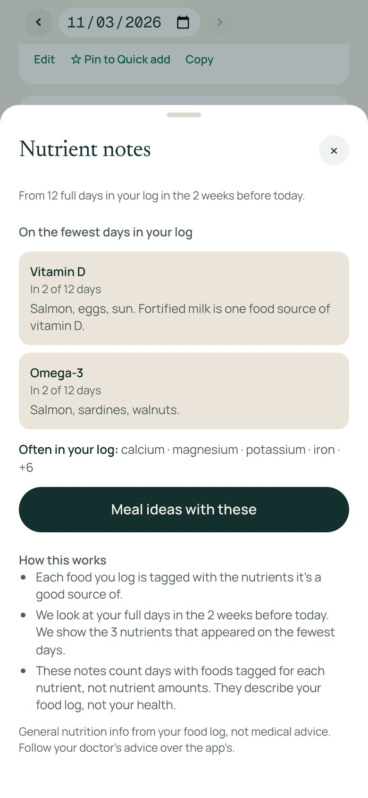
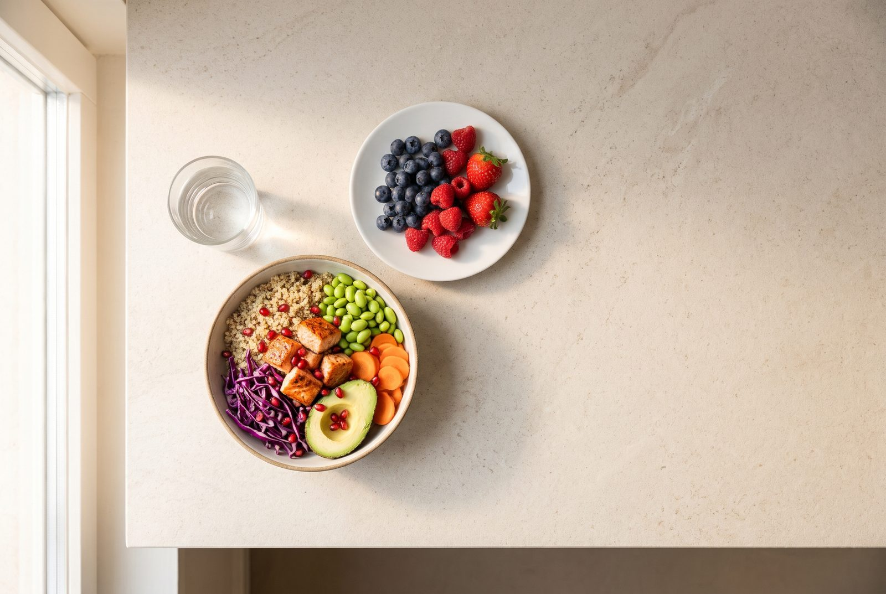
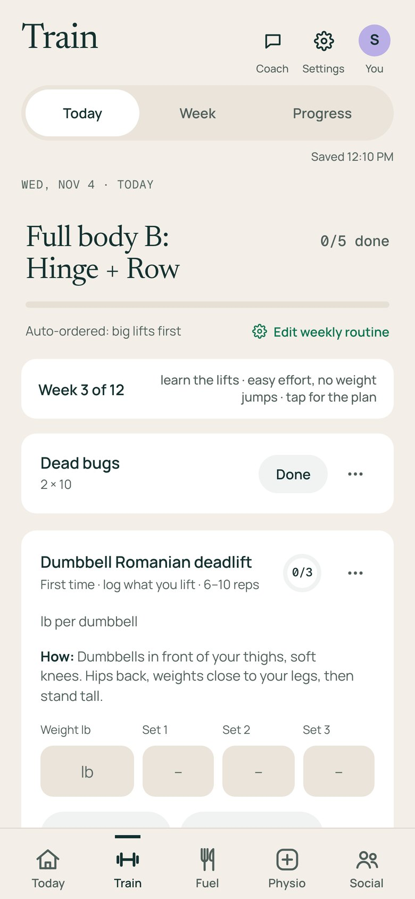

On a cut
Same cut. Different day.
A different lifter, 195 lb, on Lose fat: rest day, 2,150 kcal and 195 g protein; gym day, 2,400 kcal and 195 g protein.

Snap your lunch
Gym today. Rest tomorrow. Your food targets move with you. Snap your plate, check the estimate, and watch your protein bar fill.
Your plate, estimated in protein and calories.




On a cut
A different lifter, 195 lb, on Lose fat: rest day, 2,150 kcal and 195 g protein; gym day, 2,400 kcal and 195 g protein.

Ask your coach
How should I eat while my knee recovers?
Focus on hitting your daily 140 g protein target to support tissue repair and prevent muscle loss while training is modified. Keep calories around your rest day target of 2,800 kcal to maintain weight and avoid an aggressive deficit that could slow healing. If you have specific injury concerns, your doctor or physical therapist can provide individual medical guidance.
Beyond the totals
Your food log has more to tell you than calories and protein. Explore its colours, nutrient coverage and the foods behind them.
General nutrition info from your food log, not medical advice.



How it works
A sentence or plate photo gives your coach an estimate. Fix any item before you keep it.
Rest day, gym day, big day: food targets adjust on their own, with safe calorie floors.
Watch your protein bar fill toward your target. Follow your weight trend and goal pace over time.
Compare
| Polaris | Calorie-tracker apps | A dietitian | Guessing | |
|---|---|---|---|---|
| What you get | Food targets that follow your training days | Food logs; some basics may cost extra | Expert, personal nutrition guidance | A rough sense of what you've eaten |
| How often | Every meal, every day | Every meal you type in | At each scheduled visit | Meal by meal, by feel |
| Getting answers | In seconds, any time of day | Look it up yourself | At your next appointment | Your own best guess |
| Cost | Free to start; Pro is $19.99/mo at launch | Free tiers; some features cost extra | Billed per visit | Free |
| Works best | Alongside a dietitian, between visits | For counting calories on their own | For a personal plan and medical needs | For easy maintenance weeks |
Train
Open the app to today's session, with targets from last week.

Keep protein in view, with food targets that follow your training day.
Goal pace, weight trend, protein in view. Targets follow gym days and rest days.
Food and recovery together. Eat for healing; train around aches. Follow your doctor's or PT's advice.
Support for both stages. Pregnancy targets follow what you burn. Always follow your doctor.
Pricing
$0
Free during early access, and free to start after launch.
$19.99
A month, or $119.99 a year. Planned launch prices; full details before launch.
Get early accessQuestions
Polaris uses food targets, including calories, to help you fuel your training. Start with a sentence or photo, keep protein in view, and let targets follow your day. Your coach estimates each meal; you can correct it.
Start with a meal in a sentence, like "chicken rice bowl and a latte." Your coach estimates it, and you can fix any item before keeping it. Saved meals and portions are there for next time.
Friends never see your food or body weight. Your numbers are only visible to you. You can delete your account and data any time.
Polaris
Food, training and your coach, together.
Get early accessFree during early access. It opens the Polaris web app; sign in and you're in.